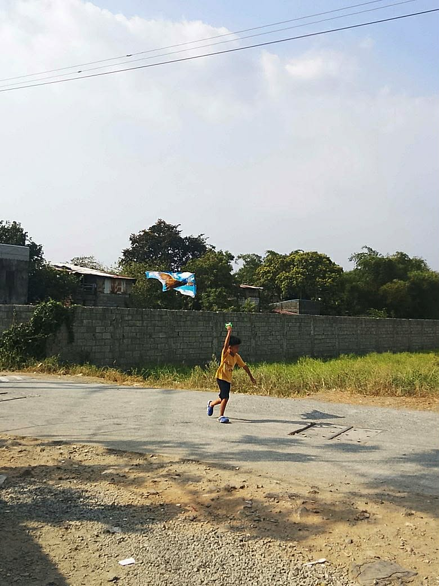
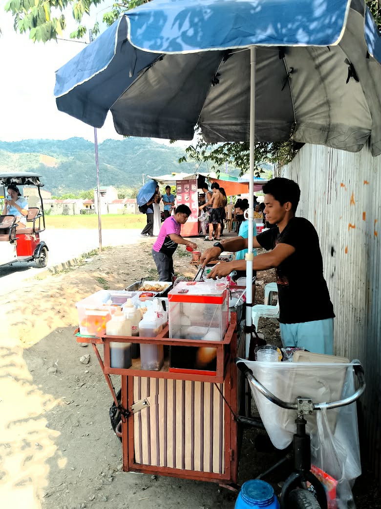
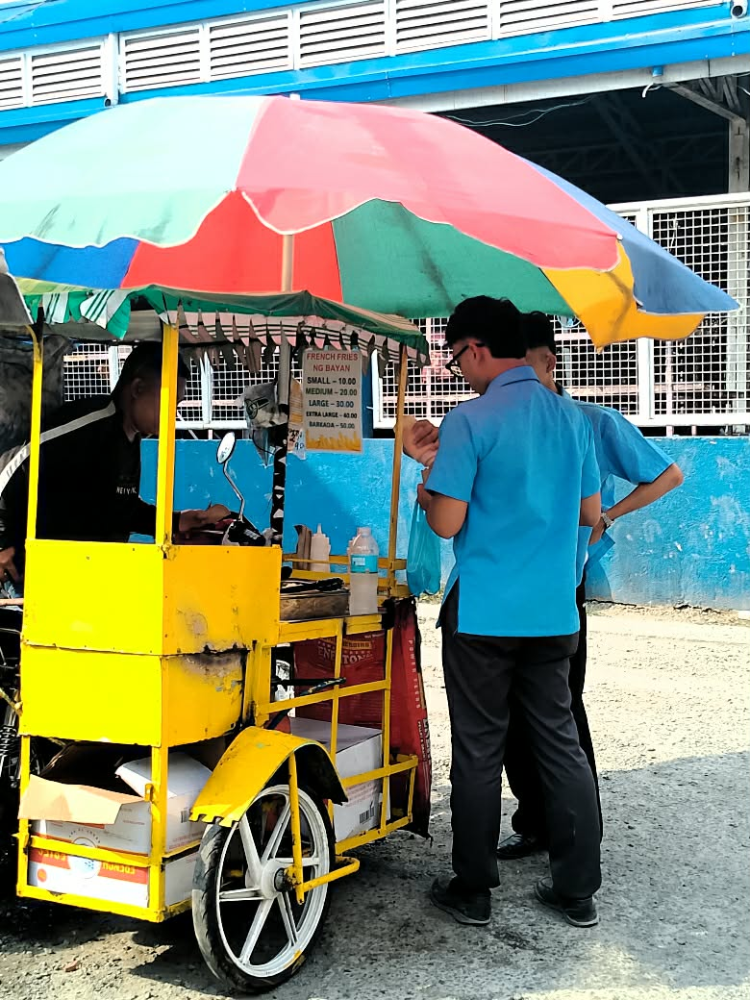
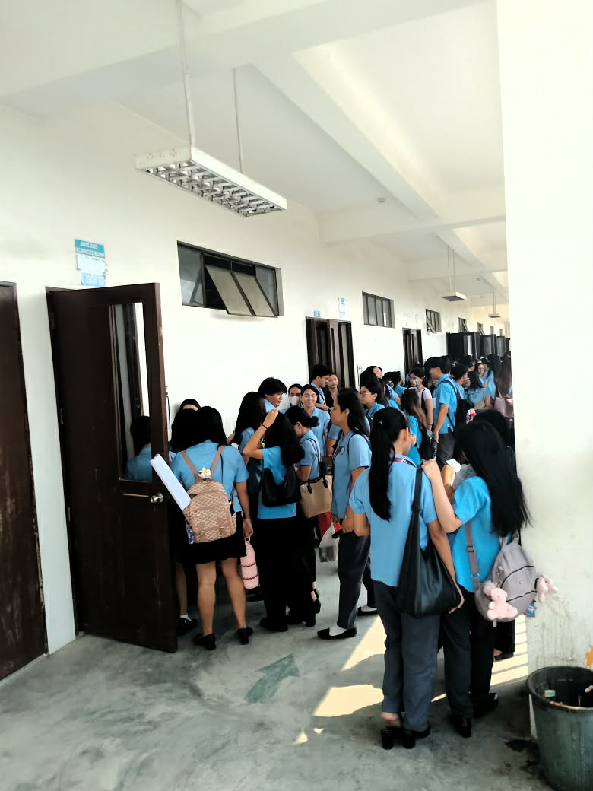

Emotional Moment

1. What story does your photo tell?
The photo I chose—the emotional moment, tells a story about the simple joy of childhood. It shows a child happily running while flying a kite in an open area, enjoying a carefree moment. It also shows that even a simple moment can already make a memorable experience.
2. Why did you choose this subject?
I chose this subject because it captures a genuine moment of happiness and innocence. The child flying a kite represents the beauty of simple life and how people can find joy in ordinary activity.
3. What elements such as lighting, composition, timing, & emotions make your photo effective?
The natural lighting from the sunlight makes the photo look bright and clear. The timing is also important because the photo was taken while the child was running and flying the kite, which shows movement. The emotion in the photo shows happiness and enjoyment, making the moment feel more real and meaningful. Overall, with the help of elements I said, it makes my photo more effective.
4. What challenges did you encounter while taking the photo?
One challenge I encountered was the very hot weather while taking the photo. It was also difficult to capture the right angle because the child was very active and kept moving while flying the kite.
5. How can you improve your shot next time?
Next time, I can improve my shot by getting closer to the subject to capture clearer details and emotions. I can also adjust the angle and framing so the kite and the subject are more balanced in the composition.
Candid

Interaction

Daily Life
